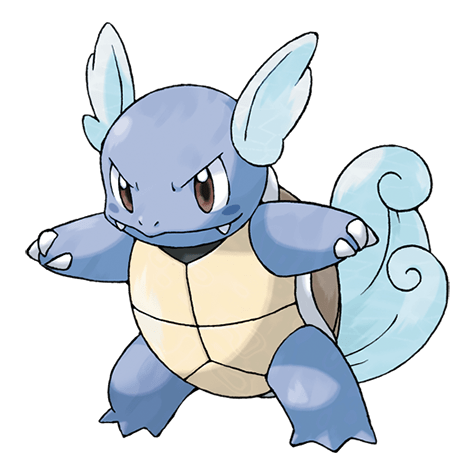

Вартортл

Вартортл — Покемон 1 поколения под номером 8 в Покедекс. Обитает он в регионе Канто и относится к Водяному типу. Большой хвост Вартортла покрыт густым мехом. По мере того как этот Покемон стареет, цвет его хвоста становится всё более насыщенным. Царапины на его панцире свидетельствуют о стойкости этого Покемона как бойца.
Тип и слабости:
Водяной
Эволюция
# 008 Вортортл
=>
# 009 Бластойз